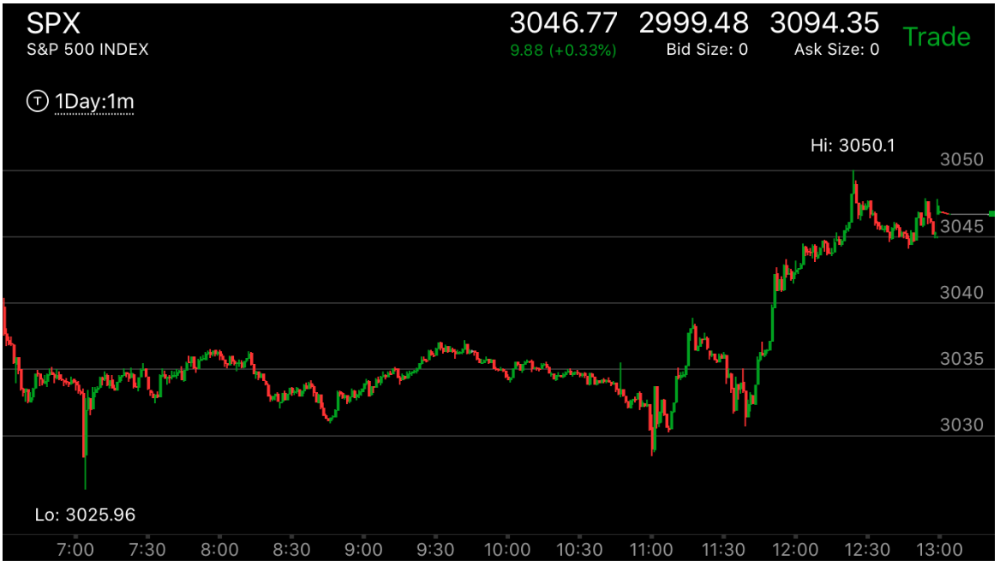

单线反转走势
- 这个走势已经处于反转状态，但是由于各种原因，它没有立刻反转，而是出现了一个快速的运动，创走势的新高或新低。然后快速返回。这个和通常在走势反转的地方运动缓慢不同，这时可以在它
的更高点/更低点预先放一个单子，即使超过也不要害怕
- 但是也可以是一根线形成了第二段走势，相反走势一开始就很大。


图示:
图一：6日盘中反转后，收盘后，半夜，它大涨，一下越过前面的下跌走势的起始高点。这个总共用的时间少于前面的下跌走势，很可能是一个反向的贯通走势。
它其实已经反转了。但是它立刻走低，形状不好，还不会立刻反转。
图二：开盘后，它冲高，拉回，再次冲高。但是这个走势的第一浪在期货上看，并不存在，所以第二浪才算第一浪
9：00再次冲高，立刻拉回，这次可以看到，它一直在这次冲高的
范围内部运动。然后大跌。9：00的冲高只有一条线，立刻拉回。好像是一个相对弱势。但是由于已经反转了。这个快速冲高拉回不能算弱势。
图三：收盘后，它反弹，填补了3090的真空，然后再次下跌。可以看到，它下跌的第一浪是图二的11：30.21：00虽然低于前面，但是它是缓慢下跌的，所以不能算走势的结束。它再次大幅拉回。
图四：开盘后，它冲高，加速，然后快速下跌，这个和图二形成了两段走势。走势完成，它立刻反弹，其实成为了第一浪。这个也是一个单线反转走势，就是它的开始速度很快。底部没有平缓的形状。
虽然更大的走势仍然是跌势，但是它在内部又反转了成为了升势。这个升势一定要回到3090以上才算结束。

图示:7:00快速下跌后，这个已经反转了。
立刻拉回，这个不一定是第一浪形成了第一浪，已经反转了。11；00它再次回到原位，形成了双底后，大涨。